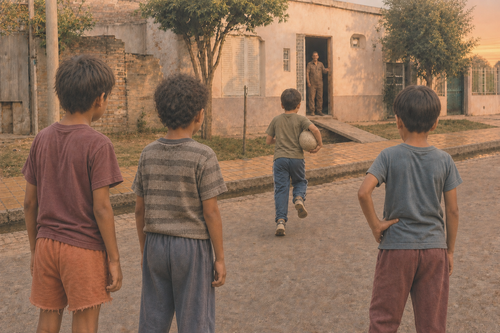

Historia 04
El silbido de mi viejo

Cuando éramos chicos, vivíamos afuera. No era como ahora, que muchas veces hay que decirles a los chicos que salgan: a nosotros tenían que llamarnos para que volviéramos a casa.
Íbamos a la escuela, hacíamos los deberes y tomábamos el té con pan, o un yerbeado con pan. Después salíamos rápido a la vereda, al baldío o a la calle del barrio. Había pelota, volantines, escondidas y amigos. Las tardes parecían eternas: cuando recién eran las ocho de la noche, sentíamos que habíamos vivido un día entero.
Claro que, cuando nos llamaban, casi siempre respondíamos: “¡Ya voy, ya voy!”. Pero seguíamos jugando un rato más.
Hasta que se escuchaba el silbido de mi viejo.
No era un silbido cualquiera: “ERA EL SILBIDO DE MI VIEJO.”
Ahí ya no había otro “ya voy”. Había que correr a casa. Con mi viejo no se jugaba. Uno sabía que podía esperar un cintazo, un chancletazo o aquel tirón de patillas que en esos tiempos muchos conocimos. No hacía falta que repitiera el llamado: ese silbido alcanzaba para entender que el juego había terminado.
Hoy lo recuerdo como la señal de que el día se terminaba: había que bañarse, cenar y prepararse para ir a la escuela al día siguiente. Pero antes de entrar, quedaba esa última corrida por la calle, con la pelota, el volantín o los amigos todavía dando vueltas en la cabeza.
Así eran aquellos tiempos: una infancia simple, larga y linda. Vivíamos afuera, y el silbido de nuestros viejos era la señal de que era hora de volver a casa.
— 5 —